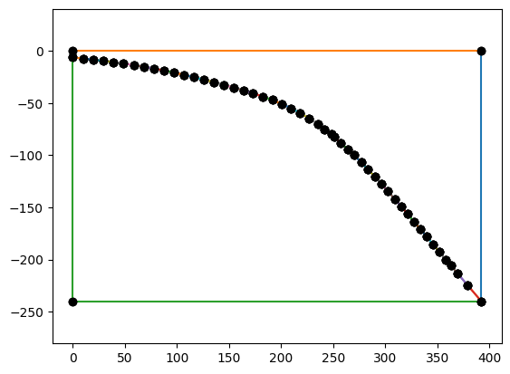
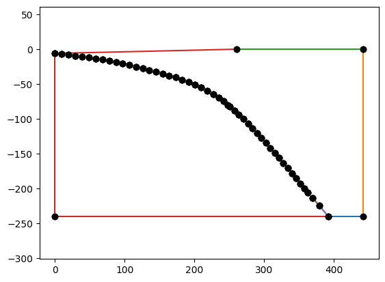
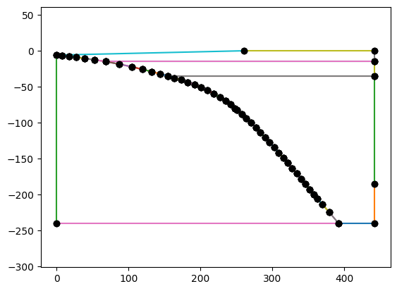

Example Geometry#
import sys, os
sys.path.append(os.path.join(os.path.pardir, 'python'))
import geometry as geo
minres = 10.0
geo.SlabSpline?
xs = [0.0, 68.2, 154.2, 235, 248, 251, 270, 358, 392]
ys = [-6, -15, -35, -70, -80, -82.5, -100, -200, -240]
res = [1*minres]*(len(xs)-1)+[3*minres]
slab = geo.SlabSpline(xs, ys, res=res, sid=1, name="Slab")
print(len(slab.points))
9
geo.SubductionGeometry?
geom = geo.SubductionGeometry(slab, slab_rid=1, wedge_rid=2,
slab_side_sid=2, wedge_side_sid=3, slab_base_sid=7,
wedge_base_sid=8, coast_sid=11, top_sid=12,
wedge_top_res=4*minres, slab_base_res=6*minres)
geom.plot()

geom.update(coast_distance=260, extra_width=50)
geom.plot()

geom.addcrustlayer(35,"LowerCrust", sid=9, rid=3, slab_res=1*minres, side_res=4*minres, side_sid=5)
print(len(slab.points))
geom.plot()
9
geom.addcrustlayer(15,"UpperCrust", sid=10, rid=4, slab_res= 2*minres, side_res=4*minres, side_sid=6)
print([geom.wedge_side_lines[i].name for i in range(len(geom.wedge_side_lines))])
geom.plot()
['WedgeSide', 'LowerCrust', 'UpperCrust']
geom.addwedgesidepoint(185, "WedgeSide::InOut", line_name="UpperWedgeSide", res=4*minres, sid=4)
geom.plot()

mesh, ct, ft = geom.generatemesh()
tdim = mesh.topology.dim
mesh.topology.create_connectivity(tdim, tdim)
Info : Meshing 1D...
Info : [ 0%] Meshing curve 1 (Line)
Info : [ 10%] Meshing curve 2 (Line)
Info : [ 10%] Meshing curve 3 (Line)
Info : [ 10%] Meshing curve 4 (Line)
Info : [ 10%] Meshing curve 5 (Line)
Info : [ 10%] Meshing curve 6 (Line)
Info : [ 20%] Meshing curve 7 (Line)
Info : [ 20%] Meshing curve 8 (Line)
Info : [ 20%] Meshing curve 9 (Line)
Info : [ 20%] Meshing curve 10 (Line)
Info : [ 20%] Meshing curve 11 (Line)
Info : [ 20%] Meshing curve 12 (Line)
Info : [ 30%] Meshing curve 13 (Line)
Info : [ 30%] Meshing curve 14 (Line)
Info : [ 30%] Meshing curve 15 (Line)
Info : [ 30%] Meshing curve 16 (Line)
Info : [ 30%] Meshing curve 17 (Line)
Info : [ 40%] Meshing curve 18 (Line)
Info : [ 40%] Meshing curve 19 (Line)
Info : [ 40%] Meshing curve 20 (Line)
Info : [ 40%] Meshing curve 21 (Line)
Info : [ 40%] Meshing curve 22 (Line)
Info : [ 40%] Meshing curve 23 (Line)
Info : [ 50%] Meshing curve 24 (Line)
Info : [ 50%] Meshing curve 25 (Line)
Info : [ 50%] Meshing curve 26 (Line)
Info : [ 50%] Meshing curve 27 (Line)
Info : [ 50%] Meshing curve 28 (Line)
Info : [ 50%] Meshing curve 29 (Line)
Info : [ 60%] Meshing curve 30 (Line)
Info : [ 60%] Meshing curve 31 (Line)
Info : [ 60%] Meshing curve 32 (Line)
Info : [ 60%] Meshing curve 33 (Line)
Info : [ 60%] Meshing curve 34 (Line)
Info : [ 70%] Meshing curve 35 (Line)
Info : [ 70%] Meshing curve 36 (Line)
Info : [ 70%] Meshing curve 37 (Line)
Info : [ 70%] Meshing curve 39 (Line)
Info : [ 70%] Meshing curve 40 (Line)
Info : [ 70%] Meshing curve 41 (Line)
Info : [ 80%] Meshing curve 42 (Line)
Info : [ 80%] Meshing curve 43 (Line)
Info : [ 80%] Meshing curve 44 (Line)
Info : [ 80%] Meshing curve 45 (Line)
Info : [ 80%] Meshing curve 46 (Line)
Info : [ 90%] Meshing curve 48 (Line)
Info : [ 90%] Meshing curve 49 (Line)
Info : [ 90%] Meshing curve 50 (Line)
Info : [ 90%] Meshing curve 51 (Line)
Info : [ 90%] Meshing curve 52 (Line)
Info : [ 90%] Meshing curve 53 (Line)
Info : [100%] Meshing curve 54 (Line)
Info : [100%] Meshing curve 55 (Line)
Info : [100%] Meshing curve 56 (Line)
Info : [100%] Meshing curve 58 (Line)
Info : [100%] Meshing curve 59 (Line)
Info : Done meshing 1D (Wall 0.0135853s, CPU 0.015917s)
Info : Meshing 2D...
Info : [ 0%] Meshing surface 1 (Plane, Frontal-Delaunay)
Info : [ 30%] Meshing surface 2 (Plane, Frontal-Delaunay)
Info : [ 50%] Meshing surface 3 (Plane, Frontal-Delaunay)
Info : [ 80%] Meshing surface 4 (Plane, Frontal-Delaunay)
Info : Done meshing 2D (Wall 0.0138946s, CPU 0.013474s)
Info : 429 nodes 981 elements
import dolfinx
import numpy as np
V = dolfinx.fem.functionspace(mesh, ("CG", 2))
all_slab_dofs = dolfinx.fem.locate_dofs_topological(V, 2, ct.find(1))
all_slab_dofs.size
995
all_wedge_dofs = dolfinx.fem.locate_dofs_topological(V, 2, ct.find(2))
all_wedge_dofs.size
590
slab_surface_dofs = dolfinx.fem.locate_dofs_topological(V, 1, ft.find(1))
slab_surface_dofs.size
91
slab_dofs = np.asarray([dof for dof in all_slab_dofs if dof not in slab_surface_dofs])
slab_dofs.size
904
wedge_dofs = np.asarray([dof for dof in all_wedge_dofs if dof not in slab_surface_dofs])
wedge_dofs.size
523